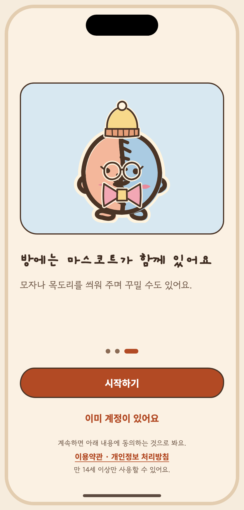
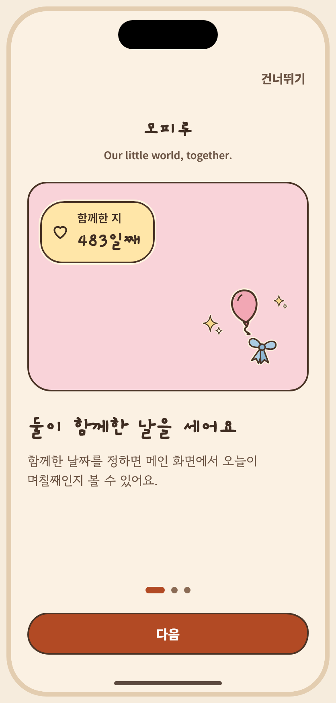

아티팩트 정본의 저장소 미러 · 버전 1794222837-1921 · 생성 파일은 수정하지 마세요. 상태 명세와 PNG는 아티팩트에 비해 오래되었을 수 있습니다. 아티팩트


# S01 온보딩 / 시작
승인자: 미승인
승인일: 미정
## 목적, ID, 경로
ID: S01
Route: /(auth)/welcome
## 디자인 원본
- [S01-onboarding.dc.html](../../../canvas/project/S01-onboarding.dc.html)
## 이미지
- [S01-3__ios-light-ko.png](../../../exports/S01-3__ios-light-ko.png)
- [S01-1__ios-light-ko.png](../../../exports/S01-1__ios-light-ko.png)
## 상태와 상호작용
- **캔버스 보드**: `S01-onboarding`
- **목적**: 제품 소개 3장(함께한 날 세기 · 프롬프트로 방 꾸미기 · 마스코트 — 3번째 장이 앱 전체에서 유일한 캐릭터 히어로), 로그인 시작, 약관·개인정보·연령 문구, 재실행 상태.
- **이동**: 앱 첫 실행 → 소개 1~3 → 시작하기 → S02. 이미 계정이 있어요 → S02. 재실행(로그아웃 후) → 최근 사용한 방법 강조된 로그인.
- 연령: 가입 시작 화면의 약관 줄이 "계속하면 만 14세 이상이며 아래 내용에 동의하는 것으로 봐요"라고 해요(최소 연령 14세는 결정, 정확한 문구는 법무 검토 필요). 연령은 이 문구로만 확인하고 생년월일을 묻지 않아요(가정).
- 스토어 정책 문구 자리는 약관 링크 아래 한 줄이에요(법무 확정 후 교체).
- 소개 1장 맨 위에 앱 이름(아룸)과 슬로건("Our little world, together.")을 보여 줘요(`brand.tagline`, 영어 원문만 결정이라 세 언어 모두 영어). 글자 크기 130% 이상에서는 이 묶음을 숨겨요.
- 소개 3의 캐릭터 이름은 아루미예요(일본어 표기는 초안(G4 원어민 검수 전)).
- 탭 바 없음(탭 구조 앞의 흐름).
- **긴 문구·언어 사례**: 영어 "Count the days you've had together"처럼 제목이 길어도 두 줄로 줄바꿈돼요. 일본어 본문은 line-break: strict.
| 상태 ID | 설명 | 사용하는 키 | 그린 조합 |
|---|---|---|---|
| `S01-1` | 소개 1: 둘이 함께한 날 | `onb.skip` `main.appName` `brand.tagline` `date.since` `a11y.dday` `dday.eyebrow` `dday.count` `onb.p1.title` `onb.p1.body` `onb.pageOf` `common.next` | iOS·밝게·ko, Android·어둡게·ko |
| `S01-2` | 소개 2: 프롬프트로 방 꾸미기 | `onb.skip` `onb.p2.title` `onb.p2.body` `onb.pageOf` `common.next` | iOS·밝게·ko, Android·어둡게·ko |
| `S01-3` | 소개 3: 마스코트 + 시작, 약관·연령 문구 위치 | `a11y.pose.wave_main` `a11y.mascot` `onb.p3.title` `onb.p3.body` `onb.pageOf` `onb.start` `onb.hasAccount` `onb.legal.lead` `onb.legal.links` `onb.age` | iOS·밝게·ko, Android·어둡게·ko, iOS·밝게·en, Android·어둡게·ja 외 4 |
| `S01-return` | 재실행: 최근 사용 로그인 표시 | `onb.back.title` `onb.back.body` `onb.lastUsed` `login.kakao` `login.apple` `login.email` `onb.legal.lead` `onb.legal.links` `onb.age` | iOS·밝게·ko, Android·어둡게·ko, iOS·밝게·en, Android·어둡게·ja |
## 이동 및 뒤로
F01: 앱 시작 → S01 → S02 → 공간 선택 S03 또는 S05. 뒤로: 로그인 → 소개; 인증 취소 → 로그인. 진입: 앱 시작. 나가기: 인증 후 공간 선택 또는 홈.
## 접근성
상태 표에 나열된 `a11y.*` 키를 스크린 리더 이름으로 사용합니다. 공통 접근성 및 200% 글자 규칙은 [interaction notes](../../../interaction-notes.md#10-접근성-상호작용)를 참조하세요. TODO: 해당 상태에 명시되지 않은 역할과 이름을 확인하세요.
## 수락 시나리오
- [ ] S01-AC-01: 소개 화면에서 시작하기 또는 기존 계정을 선택하면 S02로 이동한다.
## 열린 질문 / 추적
TODO: 명세에 없는 disabled/offline 상태의 적용 여부와 정확한 뒤로 대상을 확인하세요. 시나리오와 요구사항·테스트·실행 결과는 [추적표](../../traceability.md)에 연결하세요.
| Key | 한국어 | English · draft G4 | 日本語 · draft G4 |
|---|---|---|---|
| a11y.dday | 함께한 지 {n}일째, 2025년 6월 29일부터 | Day {n} together, since June 29, 2025 | 一緒に過ごして{n}日目、2025年6月29日から |
| a11y.mascot | 아루미, {pose} | Aroomi, {pose} | アルーミ、{pose} |
| a11y.pose.wave_main | 인사하고 있어요 | waving | 手を振っています |
| brand.tagline | Our little world, together. | Our little world, together. | Our little world, together. |
| common.back | 뒤로 | Back | 戻る |
| common.next | 다음 | Next | 次へ |
| date.since | 2025년 6월 29일부터 | since June 29, 2025 | 2025年6月29日から |
| dday.count | {n}일째 | Day {n} | {n}日目 |
| dday.eyebrow | 함께한 지 | Together | 一緒に過ごして |
| login.apple | Apple로 계속하기 | Continue with Apple | Appleで続ける |
| login.email | 이메일로 계속하기 | Continue with email | メールで続ける |
| login.kakao | 카카오로 계속하기 | Continue with Kakao | Kakaoで続ける |
| main.appName | 아룸 | Aroom | アルーム |
| onb.age | 만 14세 이상만 사용할 수 있어요. | You must be 14 or older to use Aroom. | ご利用は14歳以上の方に限ります。 |
| onb.back.body | 지난번에 쓴 방법으로 로그인해 주세요. | Sign in the way you did last time. | 前回と同じ方法でログインしてください。 |
| onb.back.title | 다시 만나서 반가워요 | Welcome back | おかえりなさい |
| onb.hasAccount | 이미 계정이 있어요 | I already have an account | アカウントをお持ちの方 |
| onb.lastUsed | 최근 사용 | Last used | 前回の方法 |
| onb.legal.lead | 계속하면 만 14세 이상이며 아래 내용에 동의하는 것으로 봐요. | By continuing, you confirm you are 14 or older and agree to the following. | 続けると、14歳以上であり、以下に同意したものとみなされます。 |
| onb.legal.links | 이용약관 · 개인정보 처리방침 | Terms of Use · Privacy Policy | 利用規約 · プライバシーポリシー |
| onb.p1.body | 함께한 날짜를 정하면 메인 화면에서 오늘이 며칠째인지 볼 수 있어요. | Set the date you got together and see which day it is on the home screen. | 一緒に過ごし始めた日を決めると、メイン画面で今日が何日目か分かります。 |
| onb.p1.title | 둘이 함께한 날을 세어요 | Count the days you've had together | ふたりで過ごした日を数えます |
| onb.p2.body | 원하는 분위기를 글로 적으면 미리 보기가 나와요. 마음에 들 때만 적용해요. | Describe the mood you want and see a preview. Apply it only when you like it. | 好きな雰囲気を書くとプレビューが出ます。気に入ったときだけ反映できます。 |
| onb.p2.title | 프롬프트로 우리 방을 꾸며요 | Decorate your room with a prompt | プロンプトでふたりの部屋を飾ろう |
| onb.p3.body | 방 한쪽에서 두 사람을 반겨 줘요. | It greets the two of you from a corner of the room. | 部屋の一角で、ふたりを迎えてくれます。 |
| onb.p3.title | 방에는 아루미가 함께 있어요 | Aroomi lives in your room | 部屋にはアルーミがいます |
| onb.pageOf | {n} / {total} | {n} of {total} | {n} / {total} |
| onb.skip | 건너뛰기 | Skip | スキップ |
| onb.start | 시작하기 | Get started | はじめる |